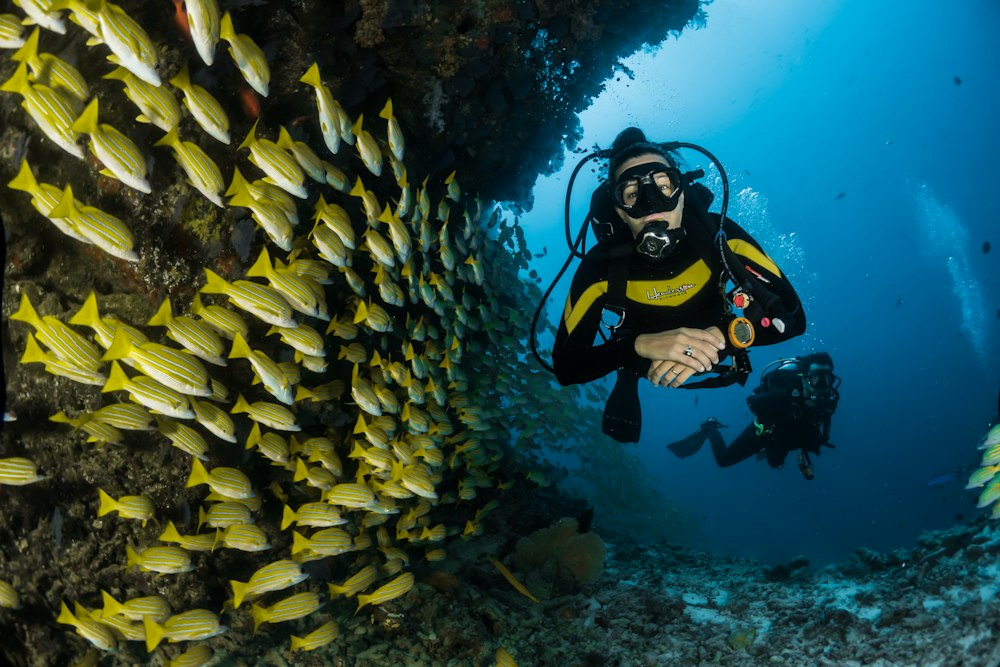
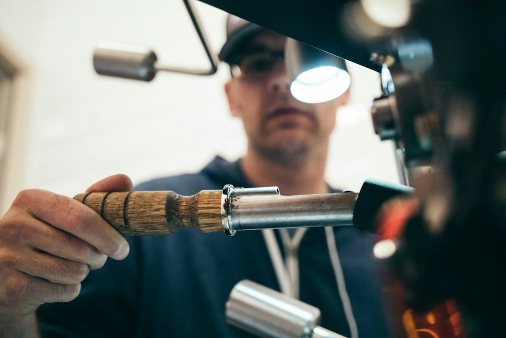
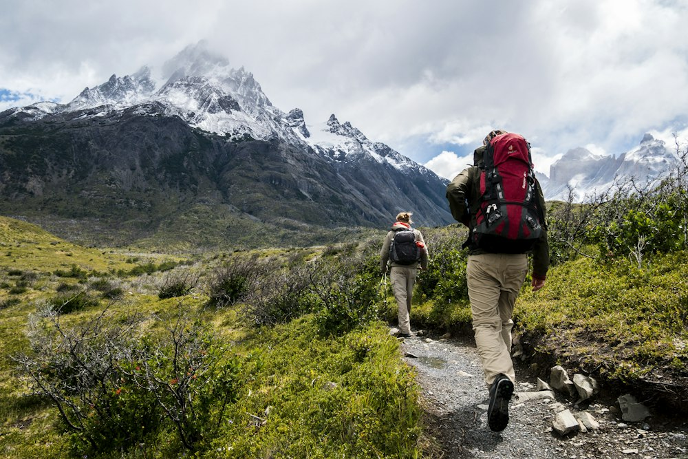
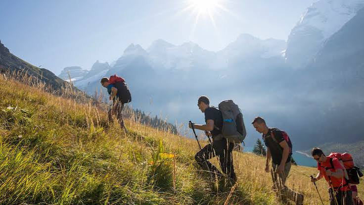

Rutas de kayak, MTB y trail en uno de los parajes más salvajes de la meseta castellana. Guías expertos, equipación de primera.
Desde principiantes que buscan su primera aventura hasta deportistas experimentados que quieren llevar sus límites más lejos.




Somos un equipo de guías locales con más de una década recorriendo cada rincón del Parque Natural del Alto Tajo. Conocemos cada sendero, cada vado, cada viento.
Nuestra misión es que vuelvas a casa con una historia que contar y las ganas de volver.
14 km · 4–5 horas · Desde Peralejos de las Truchas
22 km · 3–4 horas · MTB · Circular
18 km · 2.5 horas · 650m desnivel
8 km · 2 horas · Apto para niños
"El descenso en kayak por las Hoces fue una experiencia brutal. Los guías son increíbles, se nota que conocen el río de memoria."
"Vine con mis hijos de 10 y 13 años a la ruta familiar y fue perfecta. Profesionales y muy atentos con los peques. Volveremos sin duda."
"El trail del amanecer fue mágico. Paisajes que no había visto en la vida y un guía que sabía exactamente cuándo parar y cuándo apretar."
Plazas limitadas cada fin de semana. Contacta con nosotros y te preparamos la experiencia a medida.
Reservar ahora